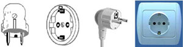

SBGN-4
The fourth SBGN workshop will be held on October 16 and 17, 2008, in Warnemunde, Germany, at the Neptun Hotel. The workshop will be a satellite of the 6th Conference on Computational Methods in Systems Biology (CMSB).
The focus of the presentations and discussions at this meeting will be the development of support for the SBGN Process Diagram Level 1 specification, and work towards defining the Entity Relationship Level 1 and Activity Flow Level 1 specifications.
Contents |
Agenda
Times have been adjusted to correspond more closely the actual events of each day. Video recordings are in QuickTime format, for which free players are available for Mac and Windows. Beware that the files huge (200 MB–2.1 GB each).
The videos are relatively low quality, and owing to lighting conditions in the room, the projected slides are almost never visible in the videos themselves. Suggested approach for using the recordings: for a given talk, open both the video and the slides file at the same time on your computer, so that you can follow the presentation slides at the same time as viewing the video.
Technical glitches for some videos are noted in footnotes.
Thursday, October 16
| Time | Topic | Speaker(s) | Slides | Video |
|---|---|---|---|---|
| 09:00 – 09:25 | Introductions | N. Le Novère & M. Hucka | (none) | (none) |
| 09:25 – 09:35 | Modeling the Interferon response pathway in macrophages | Peter Ghazal | slides | mov |
| 09:35 – 09:50 | Vanted and automatic SBGN layout | Falk Schreiber & Christian Klukas | slides demo | mov |
| 09:50 – 10:00 | Arcadia: a visualisation tool for metabolic pathways | Alice Villeger | slides | mov |
| 10:00 – 10:10 | PathVisio, WikiPathways, and GPML | Martijn van Iersel | slides | mov |
| 10:10 – 10:20 | Edinburgh Pathway Editor (EPE) | Anatoly Sorokin | slides | *1 |
| 10:20 – 10:30 | CellML | Sarala Wimalaratne | slides | *1 |
| 10:30 – 10:40 | SBW | Frank Bergmann | slides | *1 |
| 10:35 – 11:10 | Break | |||
| 11:10 – 11:20 | SBGN governance | Nicolas Le Novère | slides | mov |
| 11:20 – 11:40 | SBGN design and implementation | Stuart Moodie | slides | mov |
| 11:40 – 12:05 | Issues in SBGN Process Diagrams Level 1 | Nicolas Le Novère | slides | mov |
| 12:05 – 12:35 | Issues in SBGN Process Diagrams Level 1 | Sarala Wimalaratne | slides | mov |
| 12:35 – 13:00 | Issues in SBGN Process Diagrams Level 1 | Alice Villeger | slides | mov |
| 13:00 – 14:00 | Lunch | |||
| 14:00 – 14:15 | Comments: Implementation of SBGN Process Diagrams Level 1 | Peter Ghazal | example | mov |
| 14:15 – 14:30 | BioPAX and SBGN Process Diagrams Level 1 | Emek Demir | (none) | mov |
| 14:30 – 14:40 | Language for biochemical systems | Michael D. Pedersen | slides | mov |
| 14:40 – 14:55 | Refresher about MIMs | Mirit Aladjem | slides | mov |
| 14:55 – 15:30 | Towards SBGN Entity Relationships Level 1: Discussion #1 | (Mod.: N. Le Novère) | slides | mov |
| 15:30 – 16:00 | Break | |||
| 16:00 – 17:30 | Towards SBGN Entity Relationships Level 1: Discussion #2 | (Mod.: N. Le Novère) | slides | mov |
Notes from MH: (*1) An unexplained problem resulted in the recorded sound quality for the morning session to gradually worsen as time went on. By the time of this presentation, it unfortunately became so bad, it rendered the recording useless.
Friday, October 17
| Time | Topic | Speaker(s) | Files | Video |
|---|---|---|---|---|
| 09:20 – 09:30 | CellDesigner 4.1 & Payao plans | Hiroaki Kitano | slides | mov |
| 09:30 – 09:45 | Summary of PANTHER Pathway | Huaiyu Mi | slides | *2 |
| 09:45 – 10:00 | Towards SBGN Activity Flow Diagrams in PANTHER Pathway | Huaiyu Mi | slides | *2 |
| 10:00 – 10:30 | Toward SBGN Activity Flow Diagrams Level 1: Discussion #1 | (Mod.: H. Mi) | slides | *2 |
| 10:30 – 11:00 | Break | |||
| 11:00 – 12:30 | Toward SBGN Activity Flow Diagrams Level 1: Discussion #2 | (Mod.: H. Mi) | slides | mov |
| 12:30 – 14:00 | Lunch | |||
| 14:00 – 15:10 | More discussion of SBGN ER diagrams | (Mod.: N. Le Novère) | slides | mov |
| 15:10 – 15:40 | Break | |||
| 15:40 – 16:40 | Toward SBGN Activity Flow Diagrams Level 1: Discussion #3 | (Mod.: H. Mi) | slides | mov |
| 16:40 – 16:50 | Final miscellaneous comments | (Everyone) | (none) | mov |
Notes from MH: (*2) An inexplicable software glitch resulted in this recording's file being corrupted and unable to be opened in all movie players that I have tried.
Workshop Participants
A more detailed list of attendees and their projects is provided on a separate page. The following is only a summary.
| Name | Affiliation | Group/Project |
|---|---|---|
| Mirit Aladjem | NIH-NCI (USA) | Molecular Interaction Maps (MIM) |
| Frank Bergmann | University of Washington (USA) | Systems Biology Worbench (SBW) |
| Emek Demir | MSKCC (USA) | BioPAX, Pathway Commons |
| Sarala Wimalaratne (Dissanayake) | University of Auckland (New Zealand) | CellML |
| Johannes W. Dietrich | Ruhr-University of Bochum (Germany) | Insulin Signal Transduction |
| Peter Ghazal | University of Edinburgh (UK) | Pathway Medicine |
| Michael Hucka | Caltech (USA) | SBML, SBGN |
| Martijn van Iersel | Maastricht University (Netherlands) | Wikipathways |
| Matthias Jeschke | University of Rostock (Germany) | dIEM oSiRiS |
| Mathias John | University of Rostock (Germany) | dIEM oSiRiS |
| Hiroaki Kitano | Sony Computer Science Laboratories, Inc. (Japan) | SBGN, CellDesigner, Payao, ISSB, YSBN, RTK, SBI, Kitano Symbiotic Systems Project |
| Christian Klukas | IPK Gatersleben (Germany) | Vanted |
| Nicolas Le Novère | EMBL-EBI (UK) | BioModels Database, SBGN, SBML |
| Augustin Luna | NIH-NCI & Boston University (USA) | Molecular Interaction Maps (MIM) |
| Carsten Maus | University of Rostock (Germany) | Mosi |
| Huaiyu Mi | SRI International (USA) | PANTHER Pathway |
| Stuart Moodie | University of Edinburgh (UK) | Edinburgh Pathway Editor (EPE) |
| Michael Pedersen | University of Edinburgh (UK) | LBS |
| Stefan Rybacki | University of Rostock (Germany) | Cosa |
| Falk Schreiber | IPK Gatersleben & University of Halle (Germany) | SBGN, automatic network layout, Vanted |
| Anatoly Sorokin | University of Edinburgh (UK) | Edinburgh Pathway Editor (EPE) |
| Carolyn Talcott | SRI International (USA) | Pathway Logic |
| Lin Uhrmacher | University of Rostock (Germany) | dIEM oSiRiS |
| Alice Villeger | University of Manchester (UK) | Arcadia |
| Katja Wegner | University of Hertfordshire (UK) | NetBuilder |
Pre-Meeting Background Material
The single most important preparation is to make sure to read the latest SBGN specification documents. The meeting will not feature a tutorial about SBGN; all attendees will be assumed to be deeply familiar with the SBGN specifications.
Meeting discussions
Accommodation
A block of rooms has been reserved at the Neptun Hotel in Warnemünde, which is also the hotel where the meeting will take place. We have reserved 10 single and 10 double rooms.
You need to book your own rooms. When you book them, please mention that you will attend the SBGN meeting, and use the rebate codes "Informatik Uni Rostock" or "CMSB".
We should be able to pay for the accommodation. Therefore, do-not pay the rooms beforehand if possible (we will still be able to refund you, if you already paid for it).
Travel
As mentioned above, SBGN 4 will be held in Warnemünde, Germany, at the hotel Neptun. The map below shows its location relative to the train station in Warnemünde.
The specific meeting room has not been established yet, but will be announced when the time comes closer to the meeting. You can find information about traveling to Rostock-Warnemünde on the CMSB08 travel page.
The temperatures this time of year in the Rostock region tend to be slightly cool, but not very cold. You may want to to bring a light jacket and a sweater, and prepare for occasional rain.
If you are traveling from outside of Germany, be sure to bring an appropriate power plug converter for your laptop and all other electrical devices you're bringing. Electric current in Germany is 50 Hz, 220-240 V. The plug types are depicted below. For more detailed information on the types of plugs that are used, as well as electrical standards in various countries, please visit http://users.pandora.be/worldstandards/electricity.htm .
| Type C Plug | 
|
|---|---|
| Type F Plug |  |
{kind=link}
Contact
For any question concerning the content and organisation of the workshop, please send a message to sbgn-team@sbgn.org.